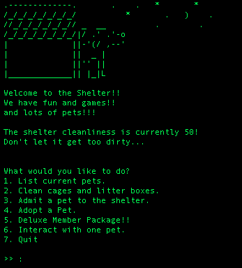
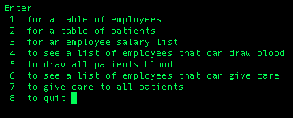

 Virtual Pet Project This application was written in Javascript. It was tested using the Jest framework and version control was manged by git. We used an agile approach to create a virtual pet application similar to Tamagachi
 High Street Hospital Project This application was written in Javascript. It was tested using the Jest framework and version control was manged by git. We used an agile approach to create a Hospital application that would keep track of employees and patients at virtual hospital.